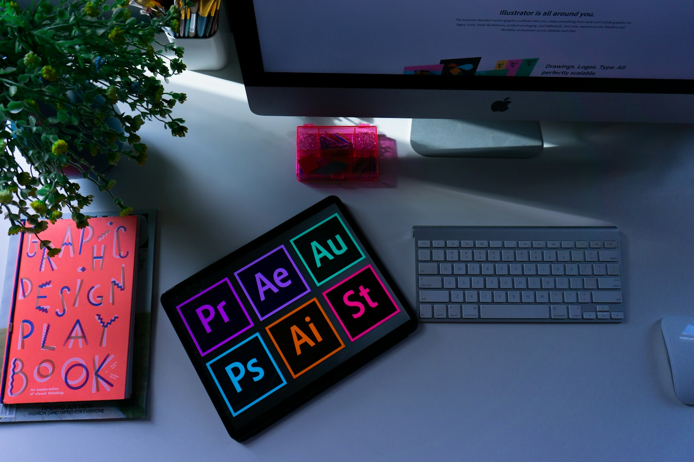

AI Ad Films
Futuristic campaign films.
AI-powered ad films blending creative direction, brand messaging, visual design and cinematic storytelling.
Film production, VFX, CGI, editing, color, branding, social media, web development and AI automation - built as one connected system.
We create AI ad films, ad films, TVCs, commercials, corporate films, brand films and short films with professional execution.
AI-powered ad films blending creative direction, brand messaging, visual design and cinematic storytelling.

Concept development, shoot execution and final delivery built around your campaign goal.

High-quality commercials with strong storytelling, production value and professional finishing.

Company profiles, founder stories, brand films and business communication for clients and audiences.

Storytelling-led films with emotional depth, mood, performance and visual language.

Platform-ready content shaped for digital attention, brand clarity and fast rollout.
We shape raw footage into polished output with VFX, CGI, editing, color grading, DI, motion graphics, 3D and animation.
Enhance live-action footage, create product visuals and add premium detail to content.
Clean, sharp edits focused on audience attention and brand storytelling.
Balanced, consistent frames with polished color depth and visual strength.
DI finishing for ads, films and videos that need cinematic consistency.
Titles, transitions, product highlights and animated brand elements.
3D visuals and animation that help brands present concepts in advanced ways.
Branding, social media, web development and automation help the audience keep seeing the story after the film is delivered.
Brand communication, post concepts, reels concepts, creative planning and social presence management.
Company websites, portfolio websites, service websites and landing pages aligned to the brand.
AI-assisted content creation and automated processes for faster, clearer business execution.
Bring us the brief. We will map the production, post, branding, web or AI path around it.